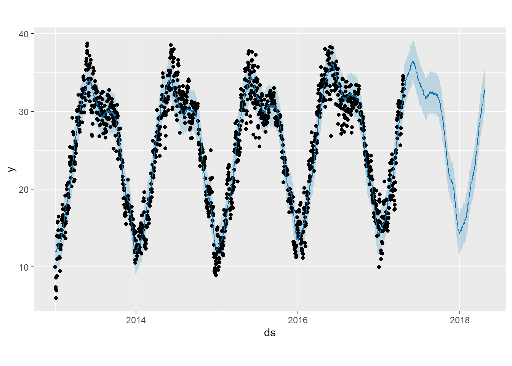

6 Aplicación algoritmo Facebook´s Prophet
Este modelo fue introducido por Facebook (S. J. Taylor & Letham, 2018), originalmente para pronosticar datos diarios con estacionalidad semanal y anual, además de efectos de vacaciones. Más tarde se amplió para cubrir más tipos de datos estacionales. Funciona mejor con series temporales que tienen una fuerte estacionalidad y varias temporadas de datos históricos.
Prophet puede considerarse un modelo de regresión no lineal de la forma:
yt=g(t)+s(t)+h(t)+ϵt,
donde g(t) denota la tendencia lineal, s(t) los comportamientos estacionales, h(t) captura los efectos de las vacaciones y ϵt es el ruido blanco.
Consideraciones:
Los nodos (o puntos de cambio) para la tendencia lineal por tramos se seleccionan automáticamente si no se especifican explícitamente. Opcionalmente, se puede usar una función logística para establecer un límite superior en la tendencia.
El componente estacional consiste en términos de Fourier de los períodos relevantes. De forma predeterminada, el orden 10 se usa para la estacionalidad anual y el orden 3 se usa para la estacionalidad semanal.
Los efectos de vacaciones se agregan como variables ficticias simples.
El modelo se estima utilizando un enfoque bayesiano para permitir la selección automática de los puntos de cambio y otras características del modelo.
6.1 Aplicación del modelo Prophet
En el análisis de las secciones anteriores se evidenció que la serie temporal de la temperatura exhibe una marcada estacionalidad anual. Por lo tanto, el modelo Prophet es adecuado para aplicarse a esta serie.
Se ajusta el modelo Prophet, se crea un DataFrame para los futuros valores a predecir (por ejemplo, próximos 365 días), y se realizan las predicciones y visualización de los componentes del modelo (tendencia, estacionalidad, etc.)
Seleccionar y renombrar las columnas necesarias para Prophet
Convertir la columna de fecha al formato Date
## Disabling daily seasonality. Run prophet with daily.seasonality=TRUE to override this.future <- make_future_dataframe(modeli, periods = 365)
forecast <- predict(modeli, future)
plot(modeli, forecast)
6.2 Análisis de los Resultados con Facebook’s Prophet
- Gráfico de Predicciones
En el primer gráfico, se observa la predicción de la temperatura media a lo largo del tiempo. la Línea Azul Oscura representa la predicción de la temperatura media, las áreas Sombreadas indican los intervalos de confianza del 80% y 95%. La predicción muestra que se conserva la estacionalidad anual ya que se prresenta el mismo patrón, se observa que los intervalos de son amplios y con mayor incertidumbre en los maximos, esto muestra una coherencia con las dispersion de los datos pasados en esta temporada.
- Gráfico de Tendencia:
Eje Y (trend): Representa la tendencia general de la temperatura. Eje X (ds): Representa las fechas.
La tendencia es relativamente constante entre 2014 y 2015. En 2016, se observa un aumento drástico, rompiendo la tendencia anterior. A partir de 2016, la tendencia intenta estabilizarse, pero sigue mostrando un ligero aumento. En general, la tendencia es levemente ascendente, lo que sugiere un aumento gradual en la temperatura media a lo largo del tiempo.
- Gráfico Semanal Estacional:
Eje Y (weekly): Representa la variación estacional semanal. Eje X (Day of week): Representa los días de la semana.
El gráfico muestra una clara estacionalidad semanal, con un aumento en la temperatura que comienza el domingo y alcanza su punto máximo el miércoles. Posteriormente, la temperatura desciende hasta llegar a su punto mínimo el sábado. Este patrón sugiere una variación predecible en la temperatura a lo largo de la semana, ademas que los dias miercoles de cada semana presentan mayores temperaturas y los sabados y los domingos menores.
- Gráfico Anual Estacional:
Eje Y (yearly): Representa la variación estacional anual. Eje X (Day of year): Representa los días del año.
En este gráfico se observa claramente el patrón estacional anual identificado en análisis anteriores. La temperatura comienza a aumentar desde enero, alcanzando su punto máximo en junio. Posteriormente, la temperatura desciende hasta llegar nuevamente a su punto mínimo en enero del siguiente año, momento en el que vuelve a iniciar el ciclo ascendente. Este patrón sugiere que junio es el mes con las temperaturas más altas, mientras que enero presenta las temperaturas más bajas.
6.3 Justificación para la Variable como una Regresión y Evaluación
# Instalar y cargar librerías adicionales si es necesario
library(forecast)
# Diagnóstico de los residuos
residuals <- forecast$yhat - df$y## Warning in forecast$yhat - df$y: longitud de objeto mayor no es múltiplo de la
## longitud de uno menor## [1] 1.938614 4.679326 4.892959 3.368750 5.971124 4.967914
# Prueba de Ljung-Box para verificar la autocorrelación de los residuos
Box.test(residuals, type = "Ljung-Box")##
## Box-Ljung test
##
## data: residuals
## X-squared = 1739.8, df = 1, p-value < 2.2e-16# Gráfico de los residuos
plot(residuals, type='l', main='Residuos del Modelo Prophet', ylab='Residuos', xlab='Tiempo')
abline(h=0, col='red')Para justificar el uso de la serie temporal de temperatura media como una regresión, se consideran varios aspectos basados en el análisis de residuos y las pruebas estadísticas realizadas. Los resultados obtenidos indican si el modelo Prophet es adecuado y si la variable puede ser tratada como una regresión.
- Autocorrelación de los Residuos (ACF):
El gráfico de la ACF de los residuos muestra que existe una fuerte autocorrelación en los residuos a lo largo de múltiples rezagos. Esto indica que el modelo Prophet no ha capturado completamente la estructura temporal de los datos y que los residuos no se comportan como ruido blanco.
- Gráfico de Residuos:
El gráfico de residuos del modelo Prophet muestra un patrón, lo que podria sugerir que los residuos no son estacionarios y tienen una tendencia.
Prueba de Ljung-Box:
El resultado de la prueba de Ljung-Box es significativo (p-valor < 2.2e-16), lo que indica que hay autocorrelación significativa en los residuos. Esto confirma que los residuos del modelo no son independientes y tienen una estructura temporal no capturada por el modelo.
- Comparación de Modelos
Resulta útil contrastar el rendimiento del modelo Prophet con los enfoques previos, tales como ARIMA y Holt-Winters, que hemos examinado anteriormente. Todos los modelos muestran un p-value notablemente bajo, menor que el nivel de significancia establecido, ademas el analisis de ACF indica la presencia de autocorrelación en los residuos. Estas observaciones sugieren que ninguno de los modelos se ajusta adecuadamente a los datos, y por lo tanto, podrían beneficiarse de mejoras adicionales.
- Viabilidad del Modelo Prophet
A pesar de las limitaciones observadas en el análisis de residuos, el modelo Prophet puede seguir siendo útil debido a su capacidad para descomponer la serie temporal en componentes interpretables como tendencia y estacionalidad. Sin embargo, los resultados indican que se requieren ajustes adicionales o el uso de modelos complementarios para mejorar la precisión de las predicciones, bajo estas circunstancias la serie podria no ajustarse totalmente a una regresión.